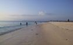
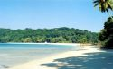
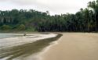
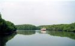
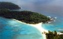
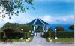

Optional Tours (On Extra Payment Basis)
Visits To Other Islands (Minimum 1 - Night halt compulsory)

Click To Enlarge
Neil Island
The Island is situated in South Andaman and to reach the Island
one has to undertake 2 to 3 hrs of journey by a boat.
The Tourism department is having a Tourist accommodation to stay.
Havelock
An Island located in South Andaman group and to reach the Island
it takes 4 to 5 hrs by regular ferry or 2 hrs if there is a speed ferry.
A beach at Radhanagar is world famous. (Tour to Havelock island is
a part of our 5 nts or 6 nts Package tour).

Click To Enlarge

Click To Enlarge
Rangat Island
Located in middle Andaman at a distance of 210 kms from Port Blair, one
has to undertake journey across Jarawa Reserve Forest or by a ferry via
Neil Havelock to Rangat. The Journey to Rangat is an exciting experience
when you travel across dense and green forest and cross the creeks by a vehicle ferry.
At Rangat there is both Govt. and private accommodation for guests to halt a night.
Mayabunder
Head quarters of North Andaman, at a distance of 360 kms from Port
Blair and 85 km from Rangat Island. The beaches around the island attract
tourists.
(Visit to Rangat Island or Mayabunder is regulated by permit granted by
Police Department on payable of Rs.200/- per vehicle. Interaction,
Photography of tribes is a non bailable offence therefore tourists are
discouraged to enter the area).

Click To Enlarge

Click To Enlarge
Cinque Island
Declared as a sanctuary, these are enchanting islands with rare corals
and under-water marine life and tropical rain forest. There is a beautiful
sand bar joining the North Cinque and South Cinque islands. Suitable for Scuba
diving and snorkeling.
Mount Harriet
The summer headquarters of the Chief Commissioner during British Raj,
this place is an ideal place for having a nice and fascinating over view
of the outer islands and the azure sea. It is the highest peak in the South Andamans
(365 metres high). One can trek from Bambooflat to Mount Harriet and from there upto
Madhuban through nature trail. Mount Harriet is a National Park also. Rare endemic birds,
animals and butterflies can be seen during the trekking.

Click To Enlarge
Click To Enlarge
Baratang Island
Baratang Island is situated about 110 kms from Port Blair to reach this place, a
tourist has to undertake a overland journey across South Andaman Forest road known as
Andaman Truck Road for which a special permit is to be obtained. The entertainment for the
tourist is a journey across lush green forest, enjoy a boat journey in mangroove
creek, visit lime stone caves and also a Mud Volcano.
A tourist can’t return from Baratang on the same day due to restrictions imposed by Andaman Administration,
however, 1 night halt is possible at Rangat island which is about 75 kms from Baratang
Tourists should note in express terms that insisting the drivers to stop vehicles to take
Photograph, videograph of any primitive people in these areas, or offering food or any material is quite a serious crime, punishable under law.